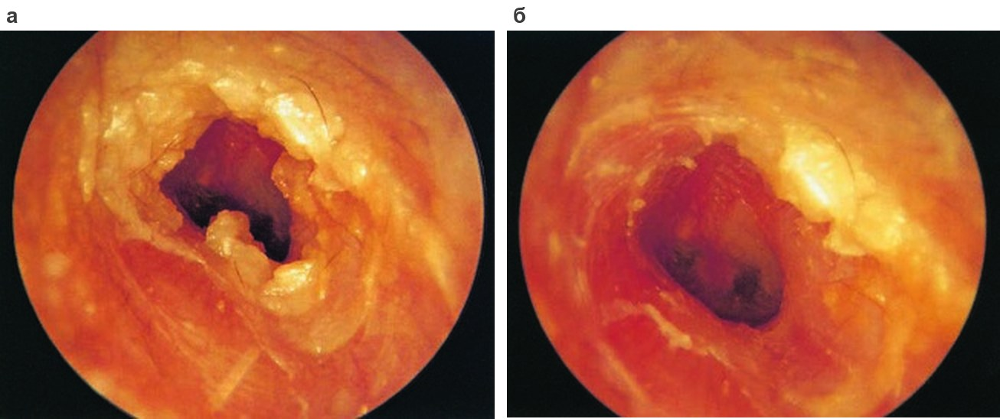
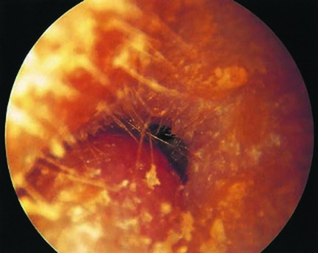

Сверка с PDF рубрикатора выполняется…
Наружные отиты
Клинические рекомендации от 13.11.2024 · взрослые
Основные положения
- Наружный отит является воспалительным поражением ушной раковины, наружного слухового прохода и эпидермального слоя барабанной перепонки.
- При неосложнённом наружном отите:
- местно ушные капли; при бактериальном отите препараты первого выбора: фторхинолоны;
- туалет наружного слухового прохода;
- обезболивание.
- При неосложнённом отите системная антибактериальная терапия не показана. Показания к системным антибиотикам:
- постлучевой отит;
- сахарный диабет;
- иммуносупрессия;
- хондроперихондрит.
- Эффективность терапии оценивают через 48–72 часа. При отсутствии эффекта уточняют диагноз и исключают атопический или контактный дерматит, псориаз, экзему.
- Диагноз злокачественного наружного отита устанавливается только при наличии всех основных критериев (перечень — во вкладке «Диагностика»).При злокачественном наружном отите необходимы
- определение уровня глюкозы крови;
- компьютерная томография (КТ);
- госпитализация;
- системная антибактериальная терапия не менее 6 недель.
Клиническая картина и классификация
Определение
Наружный отит характеризуется воспалительными изменениями ушной раковины, наружного слухового прохода и эпидермального слоя барабанной перепонки.
Наиболее часто выделяют острую и хроническую (продолжительностью более 6–12 недель) формы наружного отита. Разновидность определяется локализацией и характером воспалительного процесса: различают диффузный и ограниченный наружный отит.
Нозологические формы диффузного наружного отита- экзема;
- дерматит;
- рожистое воспаление;
- герпес;
- перихондрит, хондроперихондрит;
- злокачественный наружный отит и ряд других видов.
- фурункул;
- абсцесс.
Развитию воспаления предшествует нарушение целостности кожи, которое могут вызвать:
- травматическое повреждение;
- длительное пребывание во влажной среде;
- изменения кожи на фоне нарушения обмена веществ, сахарного диабета;
- дерматит или экзематозный процесс.
- узкий наружный слуховой проход, экзостозы;
- ношение слухового аппарата;
- попадание воды в уши;
- недостаточное образование и изменение состава ушной серы;
- нарушение местного и общего иммунного статуса;
- лучевое воздействие.
Жалобы
- дискомфорт и боль в ухе, нередко усиливающаяся при надавливании и жевании, с иррадиацией в глаз, зубы, глотку;
- снижение слуха при полной обтурации слухового прохода;
- в ряде случаев зуд и выделения из уха.
- лихорадка, как правило субфебрильная;
- ухудшение самочувствия (явления инфекционного токсикоза).
Физикальное обследование
- гиперемия, отёк, инфильтрация и лихенификация кожи наружного слухового прохода, в ряде случаев ушной раковины и поверхностного слоя барабанной перепонки;
- патологическое отделяемое;
- при ограниченной форме абсцессы и инфильтраты в наружном слуховом проходе и других отделах наружного уха;
- регионарный лимфаденит: увеличение, уплотнение, болезненность околоушных, передне- и заднешейных лимфатических узлов.
Острый наружный отит

Особенности клинических форм
При фурункуле наружного слухового прохода в стадии инфильтрации ведущей жалобой является дискомфорт, усиливающийся при манипуляциях в ухе, в стадии абсцедирования на первый план выходит боль. При диффузном отите беспокоят боль, выделения из уха, возможно снижение слуха.
Фурункул правого наружного слухового прохода
При экзематозном отите определяются желтовато-розовые очаги с шелушением, беспокоит зуд, в ряде случаев интенсивный и предшествующий высыпаниям. В дальнейшем образуются микровезикулы, эрозии, участки мокнутия, причём элементы разных стадий наблюдаются одновременно.
При герпетическом поражении за 1–2 суток до высыпаний возникают жжение, зуд и покалывание, затем появляются эритема, пузырьки и корочки. Как правило, процесс разрешается за 10–14 дней, а при присоединении вторичной инфекции в течение 3–4 недель.
Скрыто: причины и предрасполагающие факторы, особенности фурункула, экзематозной и герпетической форм.
В учебнике: заболевания наружного уха. Анатомия и физиология: наружное и среднее ухо, внутреннее ухо.
Диагностика
Диагноз устанавливают на основании характерных жалоб и клинической картины; при необходимости его подтверждают лабораторными и другими методами исследования.
Бактериологическое, микологическое и цитологическое исследования
- бактериологическое исследование отделяемого;
- микроскопическое и культуральное исследование на грибы;
- цитологическое исследование;
- при подозрении на новообразование: биопсию.
- до начала противомикробной терапии;
- под контролем отоскопии;
- тампоном диаметром до 0,3 см из просвета или со стенок наружного слухового прохода, без контакта с его наружными отделами.
Резистентность возбудителей и возможное наличие грибковой флоры требуют микробиологического исследования с последующим подбором терапии по спектру возбудителей и их чувствительности.
Аудиометрия
- жалобы на снижение слуха после купирования воспаления; цель исследования — исключить острую нейросенсорную тугоухость.
При неосложнённых формах, не распространяющихся на среднее и внутреннее ухо, возможна кондуктивная тугоухость.
Компьютерная и магнитно-резонансная томография
- осложнённая форма: формирование костных секвестров, абсцессов.
При неосложнённом отите необходимости в лучевой диагностике нет.
Консультация профильного специалиста
- поражение наружного уха на фоне системного, в том числе инфекционного, заболевания: консультация профильного специалиста и дообследование.
Злокачественный наружный отит
Диагноз злокачественного наружного отита устанавливается при наличии всех основных критериев.
Основные критерии- боль в ухе и головная боль на стороне поражения;
- отёк стенок наружного слухового прохода;
- выделения из уха;
- грануляции в слуховом проходе;
- микроабсцессы в области уха и основания черепа;
- очаг воспаления по данным сцинтиграфии;
- отсутствие эффекта от лечения более недели;
- синегнойная палочка при посеве.
- сахарный диабет;
- поражение черепных нервов;
- истощение;
- пожилой возраст.
При невозможности выполнить сцинтиграфию назначают местное лечение на 1–3 недели; отсутствие улучшения свидетельствует в пользу злокачественного отита.
При злокачественном наружном отите показано определение уровня глюкозы крови, поскольку в 90–100% случаев он сочетается с сахарным диабетом.
Лечение
Основа лечения
- устранение предрасполагающих факторов;
- адекватное обезболивание;
- регулярный туалет наружного слухового прохода.
Неосложнённый наружный отит: местное лечение
Для местного лечения неосложнённого наружного отита используют препараты, активные в отношении золотистого стафилококка и синегнойной палочки. Эффективность оценивают через 48–72 часа. Сохранение симптомов требует уточнения диагноза и исключения атопического или контактного дерматита, псориаза, экземы.
При бактериальном наружном отите препаратами первого выбора являются ушные капли с фторхинолонами.
Ушные капли рекомендованы всем пациентам с бактериальным наружным отитом; перечень препаратов приведён в таблице ниже.
При всех формах наружного отита применяют антисептики и (или) противомикробные препараты:
- антисептики: бензилдиметил[3-(миристоиламино)пропил]аммоний хлорид, йод с калия йодидом и поливиниловым спиртом;
- противомикробные препараты: фторхинолоны, аминогликозиды, противогрибковые препараты.
На фоне местного лечения выздоровление на 7–10-е сутки наступает у 65–95% пациентов.
При экзематозной форме применяют кортикостероиды в сочетании с противомикробными средствами.
Ушные капли таблица 1 в тексте КР
| Препарат | Состав | Возраст |
|---|---|---|
| Офлоксацин | офлоксацин | с 1 года |
| Ципрофлоксацин + дексаметазон (в КР под названием «Комбинил») | ципрофлоксацин (антибактериальный компонент), дексаметазон (противовоспалительный компонент) | с 18 лет |
| Норфлоксацин | норфлоксацин | с 15 лет |
| Рифамицин | рифамицин | без ограничений |
| Лидокаин + неомицин + полимиксин B | неомицин + полимиксин B (антибактериальный компонент), лидокаин (местный анестетик) | с 1 года |
| Беклометазон + клотримазол + лидокаин + хлорамфеникол | хлорамфеникол (антибактериальный компонент), клотримазол (противогрибковый компонент), беклометазон (противовоспалительный компонент), лидокаин (местный анестетик) | с 6 лет |
| Дексаметазон + неомицин + полимиксин B | неомицин + полимиксин B (антибактериальный компонент), дексаметазон (противовоспалительный компонент) | без ограничений |
| Фрамицетин + грамицидин + дексаметазон | фрамицетин + грамицидин (антибактериальный компонент), дексаметазон (противовоспалительный компонент) | без ограничений |
Системная антибактериальная терапия
При неосложнённом наружном отите системная антибактериальная терапия не показана, поскольку её добавление к местному лечению не улучшает результатов.
Показания к системной антибактериальной терапии
- постлучевой наружный отит;
- сахарный диабет;
- иммуносупрессия.
При хондроперихондрите ушной раковины применяют системные антибиотики и противовоспалительные средства для купирования болевого синдрома и отёка.
Злокачественный наружный отит
Системная антибактериальная терапия продолжительностью не менее 6 недель препаратами с антисинегнойной и антистафилококковой активностью.
Хирургическое лечение
- фурункул наружного слухового прохода в стадии абсцедирования;
- гнойный хондроперихондрит ушной раковины;
- пролежень кожи наружного слухового прохода;
- злокачественный (некротический) наружный отит.
- ограниченный отит: вскрытие и дренирование абсцессов наружного слухового прохода;
- злокачественный отит: удаление грануляций, костных и хрящевых секвестров и холестеатомы в пределах зоны поражения.
Физиотерапия
Для повышения эффективности лечения применяется физиотерапия.
Микробиологическое исследование повторяется до подтверждения элиминации возбудителя.
При сахарном диабете и нарушении толерантности к глюкозе необходим контроль уровня глюкозы крови.
Скрыто: физиотерапия, повторные посевы, контроль глюкозы.
Техника операций в учебнике: вскрытие фурункула наружного слухового прохода, удаление инородных тел наружного слухового прохода.
Алгоритм действий врача при наружном отите
- 1
Пациент с подозрением на наружный отит
Взрослый пациент жалуется на дискомфорт и боль в ухе, нередко усиливающуюся при надавливании и жевании, иногда с иррадиацией в глаз, зубы, глотку. Возможны зуд, выделения из уха, а при полной обтурации слухового прохода снижение слуха.
Наружный отит является воспалительным поражением ушной раковины, наружного слухового прохода и эпидермального слоя барабанной перепонки.
- 2
Диагностика
Диагноз устанавливают на основании характерных жалоб и клинической картины: при осмотре выявляют гиперемию, отёк и инфильтрацию кожи наружного слухового прохода, патологическое отделяемое, при ограниченной форме абсцессы и инфильтраты, возможен регионарный лимфаденит.
При необходимости проводят бактериологическое и микологическое исследование отделяемого до начала противомикробной терапии. При подозрении на злокачественный наружный отит определяют уровень глюкозы крови и выполняют компьютерную томографию.
- 3
Диагноз подтверждён?
Решается вопрос о том, соответствуют ли жалобы и клиническая картина наружному отиту. Диагноз злокачественного наружного отита устанавливается только при наличии всех основных критериев.
Подтверждён ли диагноз наружного отита?
- 4
Продолжение диагностического поиска
конец алгоритмаДиагноз не подтверждён, поэтому диагностический поиск продолжают. При отсутствии эффекта лечения через 48–72 часа уточняют диагноз и исключают атопический или контактный дерматит, псориаз, экзему. При поражении наружного уха на фоне системного заболевания показана консультация профильного специалиста.
- 5
Лечение
Основу лечения составляют устранение предрасполагающих факторов, адекватное обезболивание и регулярный туалет наружного слухового прохода. При неосложнённом бактериальном отите препаратами первого выбора являются ушные капли с фторхинолонами; системная антибактериальная терапия не показана.
Системные антибиотики назначают при постлучевом отите, сахарном диабете, иммуносупрессии и хондроперихондрите. Эффективность оценивают через 48–72 часа. Хирургическое лечение показано при абсцедировании фурункула, гнойном хондроперихондрите и злокачественном наружном отите; при последнем необходимы госпитализация и системная антибактериальная терапия не менее 6 недель.
- 6
Выздоровление
конец алгоритмаНа фоне местного лечения выздоровление наступает на 7–10-е сутки. Критерии выписки: стихание воспалительных явлений в наружном слуховом проходе и отсутствие гнойно-септических осложнений. Для профилактики рекомендуют ограничить использование ватных палочек, избегать избыточного туалета слухового прохода и соблюдать гигиену при использовании берушей, слуховых аппаратов и наушников. Медицинская реабилитация не рекомендована.
Профилактика. Показания к госпитализации
- ограничить использование ватных палочек;
- избегать избыточного туалета наружного слухового прохода;
- соблюдать гигиену при использовании берушей, слуховых аппаратов и наушников.
Лечение, как правило, амбулаторное.
Показания к госпитализации- некротический (злокачественный) наружный отит.
- стихание воспалительных явлений в наружном слуховом проходе;
- отсутствие гнойно-септических осложнений.
Медицинская реабилитация не рекомендована.
Коды МКБ-10
Источник и актуальность
Журнал сверки
Неточности и противоречия в тексте рекомендации
- Ушные капли с норфлоксацином в данной рекомендации разрешены с 15 лет, в КР «Отит средний острый» детям старше 1 года.